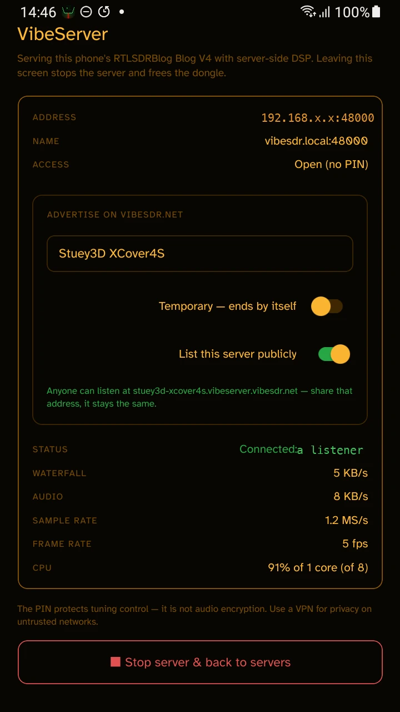
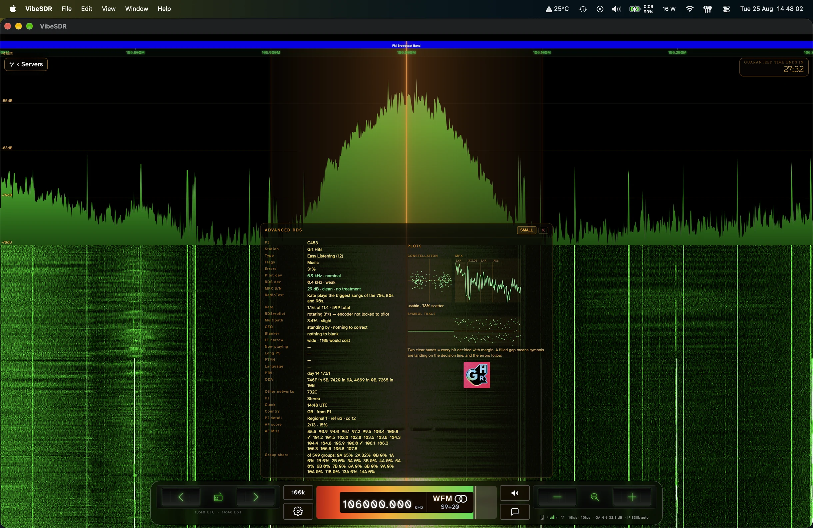

A full SDR ecosystem, not just an app: the VibeSDR receiver, the VibeServer that feeds it, and VibeSDR Jr on your wrist, all running the same DSP and the same dial. Not a desktop app squashed down to fit a phone: every screen gets a layout designed and optimised for it, from a watch face to a monitor. Tune the shared networks it speaks, UberSDR, OpenWebRX, KiwiSDR, FM-DX, SpyServer and rtl_tcp, or plug a dongle in and tune your own. Or host your own VibeServer and share it with everyone.
£2.99 covers Apple's developer fees. The source is free and always will be. No subscription, no account, nothing phoned home.
The APK above installs straight from GitHub and needs no Google at all. Prefer the Play Store version? It is in Google's closed testing: join the Google Group first, then Google's opt-in link lets you in.
Most SDR apps show you a modified copy of the server's own web client. VibeSDR connects at the API level and is the client. One set of controls, one familiar interface, one set of settings across every server.*
And because we write the demodulator too, the same signal path runs everywhere: on your phone, on the server you host, on your wrist. That one fact is what buys Advanced RDS on a watch, an AGC that sorts a £30 dongle out by itself, and a server that runs on a phone.
Yours or somebody else's: UberSDR, OpenWebRX, KiwiSDR, FM-DX, SpyServer, rtl_tcp, and every VibeServer in the network.
Tune one now →Plug an SDR into a spare phone, a Mac or a Linux box. It's a receiver anyone can listen to, shared by sending a link.
Turn a spare phone into one →In your hand or on your wrist. VibeSDR on iPhone, Android and Mac, and VibeSDR Jr, a real receiver on the Apple Watch that connects, tunes and plays by itself.
See it on the Watch →* Some KiwiSDRs refuse API-level connections. For those you are offered a compatibility option that shows the original Kiwi web client inside VibeSDR.
These are the VibeServers listed on the network at this moment. Open one in a browser and you get the full client: waterfall, Advanced RDS, the decoders. A new network, run by the people listening to it.
Loading the directory…
Grab a window and drag it. The layout follows in real time and the waterfall keeps scrolling through it, never redrawing. The app does it. The built-in web client does it. The watch is the same layout at one inch.
In a few minutes it's a VibeServer, with Advanced RDS and the decoders included. No config file, no Docker, no reverse proxy, no port forwarding. It sorts the gain out itself. Share it by sending a link. We run one on a rugged handset from 2019 to prove the point: if it can do it, your old phone can.

| Waterfall | 5 KB/s |
| Audio | 8 KB/s |
| Total to each listener | 13 KB/s |
| Sample rate | 1.2 MS/s |
| CPU | 1 core of 8 |
Sharing your radio costs about as much bandwidth as a podcast. Idle, the phone sits at a tenth of that core.

Tick List on VibeSDR.net and the server opens a Cloudflare tunnel to the directory by itself.
Set a PIN and it's yours and your club's. Leave it open and it's on the directory. The settings stay behind an admin password either way.
The same server runs native on Apple Silicon as a menu-bar app, and on Linux, arm64 and amd64, from our apt repository. Plug in an RTL-SDR, an Airspy HF+ or an SDRplay RSP, click Open in Browser, and tune. Several receivers can sit behind one address; listeners pick from a front page that shows what's free.
Hosting needs Android, macOS or Linux. Listening needs nothing but a browser.
 VibeDSP
+
VibeDSP
+
 VibeServer
VibeServer

Its own connection, its own audio, no phone involved. Turn the Digital Crown to tune, press and hold for the menu, leave the handset at home. A standalone SDR client on a one-inch screen cannot be bolted on. It exists because the DSP is ours.
Speaker output on models Apple allows it on; headphones on older ones.
Want the wrist remote instead? That's VibeSDR Buddy. It drives the phone app from your Watch and ships inside VibeSDR, no separate download.
Not just the station name. The PI code and what it means, PTY, the traffic and music flags, RadioText and RadioText+, Long PS, the clock, the language, alternative frequencies and the other stations in the network.
Then the measurements you'd normally buy hardware for. Pilot and RDS deviation. Block error rate. A live constellation with a scatter figure, the MPX spectrum, and the symbol trace that explains the error rate at a glance.
And the RDS-to-pilot phase, the reason this panel exists. Near 0°, or near 90° for quadrature encoding, is correct. The middle ground means a transmitter fault. It will also tell you when a station's encoder isn't locked to its own pilot at all, which draws as a rotating ring rather than two lobes. That's a real fault, found on air, confirmed on two independent receivers.
Calibrated against a PIRA broadcast analyser by Hans van Eijsden, who measured our readings against professional equipment station by station until they agreed. Thank you, Hans.
Tune a VibeServer to a Band III ensemble and every service on it appears, with its logo and its live text, all at once. Pick one and it plays, on the phone, in the browser, or on the watch. The receiver does the decoding, so a watch gets DAB+ with nothing added to the watch.
Shown beside a receiver in the directory only when its owner has set it up for DAB+.

Real tuners were a pleasure to use and impossible to get wrong. SDR software is the opposite: enormously capable, and a wall of panels. VibeSDR sits in the gap, built for fingers and thumbs from the first line. Pick your decade.


The same station, the same screen, on 4625 kHz. Only the bottom inch changes.


AirPlay Mirroring throws the receiver onto a television. A waterfall a metre wide is a different thing to one in your palm. Pair a Bluetooth keyboard and nearly every button has a key behind it: tuning, zoom, mode, step, bookmarks, the servers list, the panels. A shack, assembled from a phone and a telly.
VibeSDR connects to every server type below at the API level, so each one delivers its signal into the same place: our own DSP, hand-tuned with NEON SIMD, and a spectrum and waterfall drawn on the GPU. Set your preferred display settings once and they will follow you about.
Switch Raw IQ out on in the client's audio controls and the channel you are tuned to becomes an rtl_tcp stream. Point SDR++, SDR#, GQRX, DSD-FME or anything else that speaks rtl_tcp at it. Tuning from that app moves the dial on the receiver, and the web client keeps playing.
On your own network nothing else is needed: the client shows the receiver's address and port, up to 250 kHz wide, and your app connects straight to it. Through the tunnel the client shows a six-character code instead. Run VibeIQ on your machine, type the code, and the stream arrives on 127.0.0.1:1234, 48 kHz wide, which covers every digital voice and data mode.
VibeIQ is one static binary for macOS, Linux and Windows, nothing to install. Needs a receiver whose owner has enabled Raw IQ out.
The DSP is light enough for a 2019 budget phone to host a server and a 1 GB Android Go handset to run the client. Apps for iOS, Android, Mac and Apple Watch. Everywhere else, the built-in web client with nothing to install.
I'm not a licensed amateur and I don't transmit. I'm a listener. It started on the east coast of England as a kid, pulling Dutch television in on an indoor aerial when the weather was exactly right. I didn't know I was watching a Sporadic-E opening. I still chase it.
I am not a developer and I won't pretend to be one. I'm the concept, the UI and the tester, and the readme says so. Claude writes the code. Every decision, every dead end and every release sign-off is mine, and the whole history, failed experiments included, is on GitHub for anyone to read. A user has already fixed a bug and sent a pull request.
Nothing ships that I haven't driven myself on real hardware. The RDS analyser was checked against a professional broadcast analyser by someone who owns one. The DAB decoder took four days of chasing a breakup before it was right. Where I couldn't test, like HackRF, I worked with someone who could.
The App Store price covers Apple's fees. The source is GPLv3, the APK is free, and it stays that way.